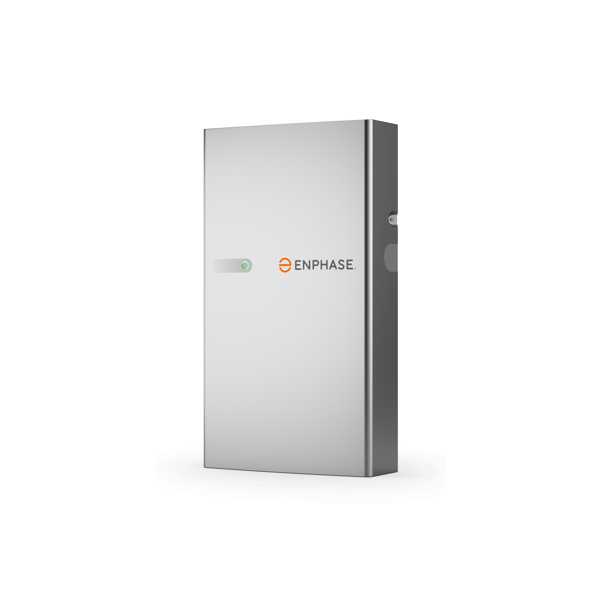
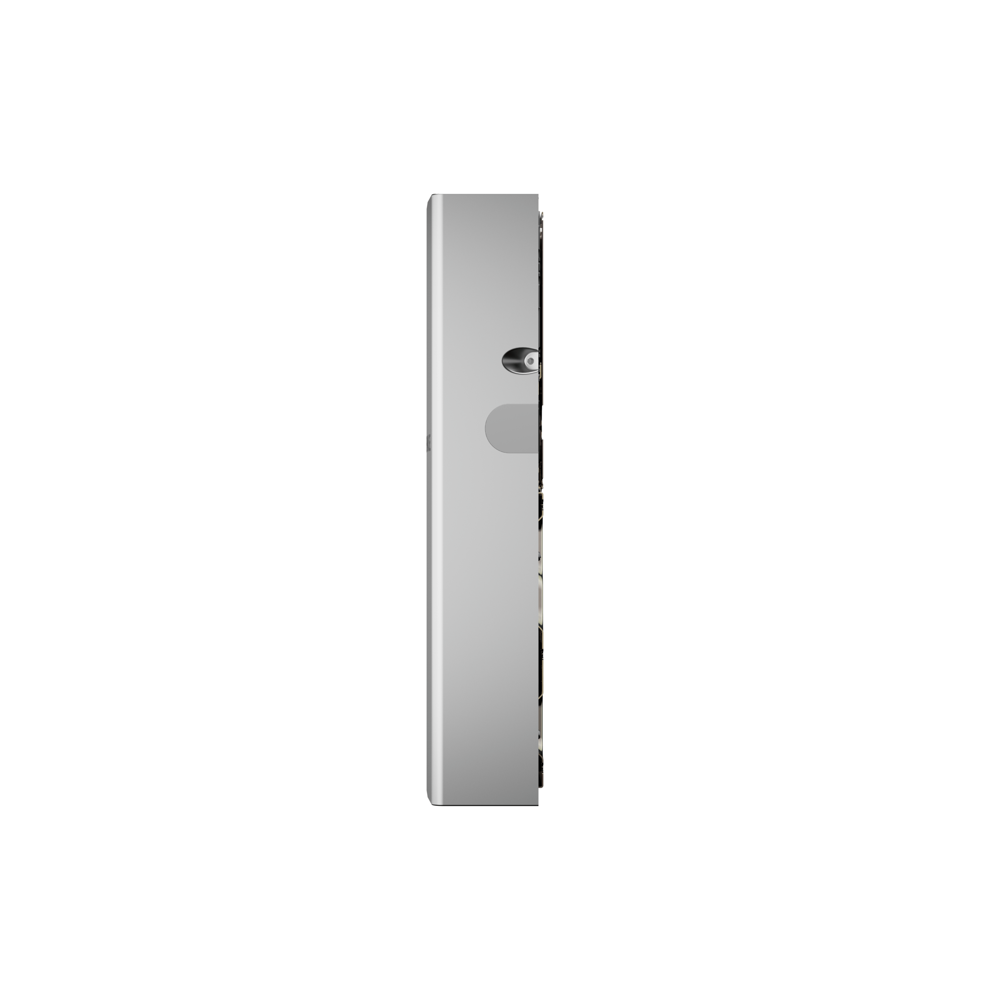
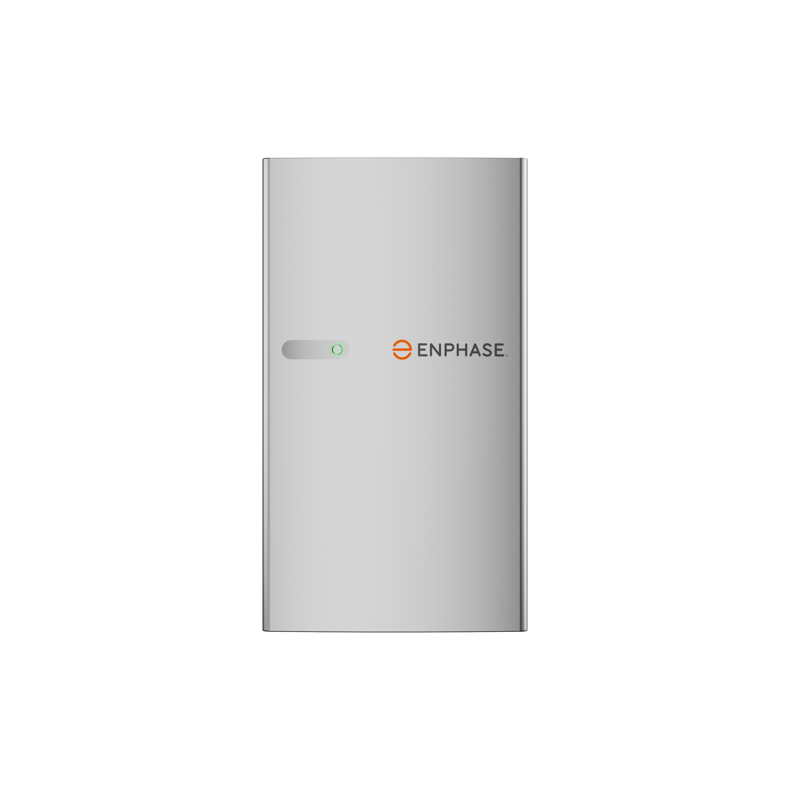

Enphase IQ Battery 5P



Estimated US Price
Estimated hardware price: $2,800–$4,000 per battery
Current supplier listings vary by distributor, SKU and domestic-content configuration. This is an equipment reference only and does not include installation, electrical work, permits or backup-controller costs. Current listings range from about $2,786 to $4,031 for the battery unit. citeturn0search8turn0search9
Specifications
| Usable capacity | 5.0 kWh |
| Continuous power | 3.84 kW |
| Peak power | 7.68 kW |
| Peak duration | 3 seconds |
| Battery chemistry | Lithium iron phosphate (LFP) |
| Architecture | AC-coupled |
| Integrated power electronics | Six IQ8D-BAT microinverters |
| Nominal AC voltage | 240 V |
| Frequency | 60 Hz |
| Enclosure | NEMA 3R |
| Warranty | 15 years / up to 6,000 cycles, subject to applicable terms |
The IQ Battery 5P is designed as a modular AC-coupled storage unit and is particularly well suited to homes using the Enphase Energy ecosystem. It can also be used with compatible non-Enphase solar systems through AC coupling. Current 2026 technical references list 5.0 kWh usable capacity, 3.84 kW continuous power and 7.68 kW peak power. citeturn0search2turn0search7
Expansion & Future Capacity
The IQ Battery 5P is modular, allowing homeowners to add additional battery units as storage needs grow. System sizing depends on the Enphase configuration, backup requirements, electrical design and local installation rules. More units increase both available energy capacity and aggregate power output.
Who Is It For?
The IQ Battery 5P is a strong option for homeowners who want modular storage, high power for its size and close integration with Enphase solar equipment. For a real installation quote, compare the exact battery SKU, controller requirements, labor, permits and local utility requirements.
No Add to Cart or Buy Now option is provided on this page.